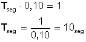

Una onda es una perturbación que avanza o que se propaga en un medio material o incluso en el vacío. Cuando estas ondas necesitan de un medio material, se llaman ondas mecánicas. Las únicas ondas que pueden propagarse en el vacío son las ondas electromagnéticas.
El sonido es un tipo de onda mecánica que se propaga únicamente en presencia de un medio material.
Un cuerpo al vibrar imprime un movimiento de vaivén (oscilación) a las moléculas de aire que lo rodean, haciendo que la presión del aire se eleve y descienda alternativamente. Estos cambios de presión se trasmiten por colisión entre las moléculas de aire y la onda sonora es capaz de desplazarse hasta nuestros oídos. Las partes de la onda en que la presión aumenta (las moléculas se juntan) se llaman compresiones y aquellas en que la presión disminuye (las moléculas se alejan) se llaman enrarecimientos.
Según la dirección de propagación, clasificamos las ondas en dos tipos:
Es cuando la vibración de la onda es paralela a la dirección de propagación de la propia onda. Estas ondas se deben a las sucesivas compresiones y enrarecimientos del medio, de este tipo son las ondas sonoras. Un resorte que se comprime y estira también da lugar a una onda longitudinal.
El sonido se trasmite en el aire mediante ondas longitudinales. Otro ejemplo de onda longitudinal es quella que se produce cuando se deja caer una piedra en un estanque de agua, Se origina una perturbacion que se propaga en circulos concéntricos que, al cabo del tiempo, se extienden a todas las partes del estanque.
Todas las ondas al moverse lo hacen una tras otra como si fuera un tren de donde se coloca un vagon tras otro.
es el punto más alto de una onda
Es el número de ondas producidas por segundo. La frecuencia se indica con la letra f minúscula. Se mide en ciclos/ segundo o hertz (Hz). Coincide con el número de oscilaciones por segundo que realiza un punto al ser alcanzado por las ondas.
Las dos magnitudes anteriores, longitud y frecuencia, se relacionan entre sí para calcular la velocidad de propagación de una onda.
Es la relación que existe entre un espacio recorrido igual a una longitud de onda y el tiempo empleado en recorrerlo. Se indica con la letra V y es igual al producto de la frecuencia (f) por la longitud de onda (λ). Matemáticamente se expresa así:
La fórmula que nos indica que la longitud de onda y la frecuencia f son dos magnitudes inversamente proporcionales, es decir que cuanto mayor es una tanto menor es la otra.
Periodo: Es el tiempo (en segundos) que tarda un punto en realizar una oscilación completa al paso de una onda. Se abrevia con la letra (T).
La frecuencia (f) se relaciona con el periodo según la fórmula
Volvamos a la fórmula para reemplazar en ella f (frecuencia), y nos queda la fórmula
Lo cual nos indica que también podemos calcular la velocidad si conocemos la longitud (λ) y el periodo (en segundos) de una onda.
Como vemos, podemos relacionar estas magnitudes y conociendo los valores de algunas de ellas podemos determinar los valores de las otras, usando las fórmulas indicadas.
El edificio Platinum, ubicado en Santiago, se mece con una frecuencia aproximada a 0,10 Hz. ¿Cuál es el periodo de la vibración?
Datos:
Frecuencia f = 0,10 Hz
formula:
|
Reemplazamos los valores: |
Calculamos Tseg  |
Respuesta:
El periodo (intervalo de duración entre dos crestas de una onda) es de 10 segundos.